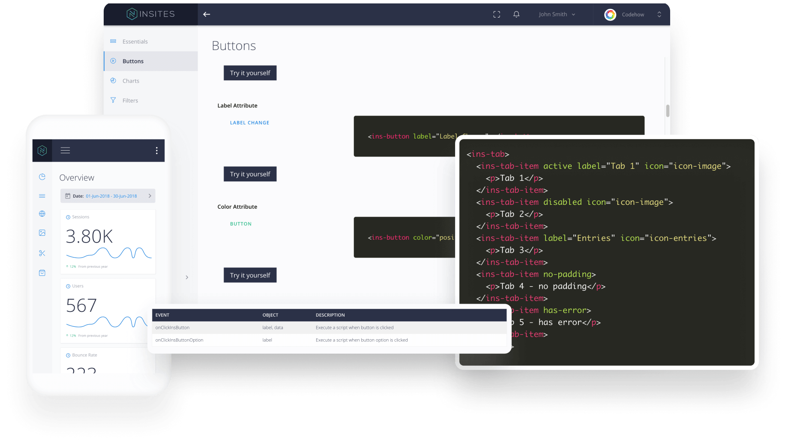

Insites framework allows you to create world class web applications using elements through a complete design and development eco-system.

Start using Insites on your projects by simply importing these files on your template.